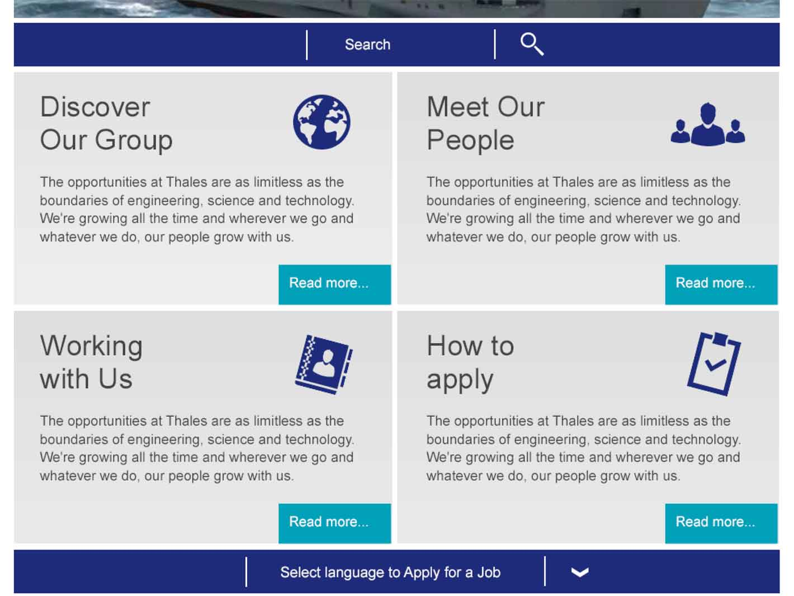
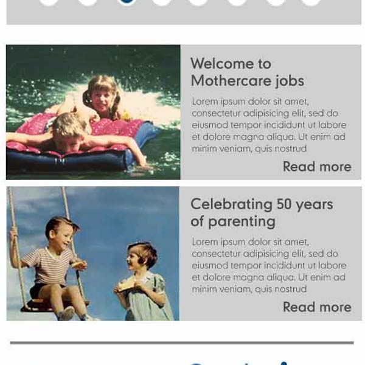
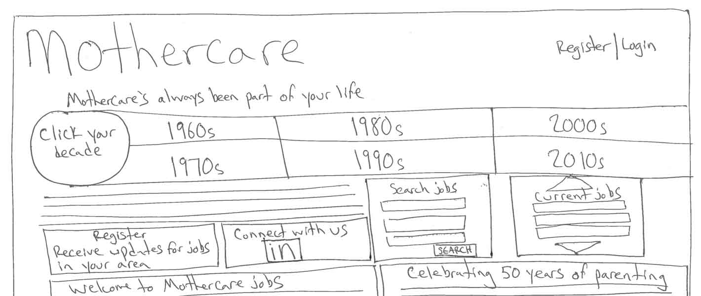
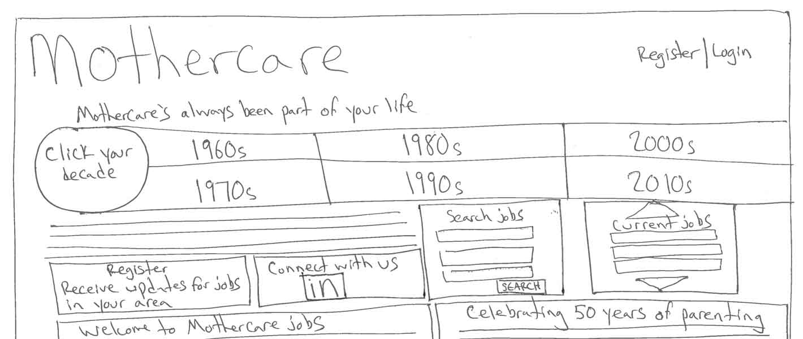

Take Note
Some of the common flags that the development team raised in reviewing the homework assignments:
Problem: Content Parity


- Amount of content available varies based on screen size - all users do not see the same content modules
- Treats users on mobile browsers "second-class citizens of the web"
Solution: One Web for All
A responsive website is a single website with a single group of content items to be displayed on all screens. Do not pick and choose features to show on one screen size versus another. If it's good enough for large screens, it's good enough for small screens, and vice-versa. Images may change and layouts may shift, but the same text and functionality should always be available.
Problem: Gridlock


- Assumes that content will always be a certain length, and that all content modules will always be the same length in order to align perfectly
- Adding or removing copy in later site updates can skew layout
- Sets limits within the layout that prevent content from "flowing"
Potential Solutions:
- Replace grid styles with a less constrained layout
- Keep modules, but make it clear in the mockups (especially those going to clients) that modules may not always align perfectly
Problem: Merry-Go-Round?


Using carousels to present a group of information on both small and large screens is not an ideal solution:
- Click-through and eye tracking studies demonstrate that user engagement with these features is low
- Move from left to right, when natural user motions within site are up and down (via either finger or mouse scroll)
- Take important information out of the user's view and puts it in a space they are less likely to see
- When large images are included, can add significant weight to a page and reduce load time
Potential Solutions:
- Content audit
- Is all of this information relevant to the user?
- For carousel banners: Do all of these images add value? Is this content more important in the overall hierarchy than the main body copy and search functionalities?
- What is the message that all of this content is trying to convey? Can it be stated in a more condensed manner?
- Alternate layout patterns
- Expandable/collapsible panels (all headlines are shown at once)
- Display condensed version of content all at once on one page, link from there to separate pages to expand upon information
 


{kind=link}
{kind=link}
{kind=link}
{kind=link}
{kind=link}